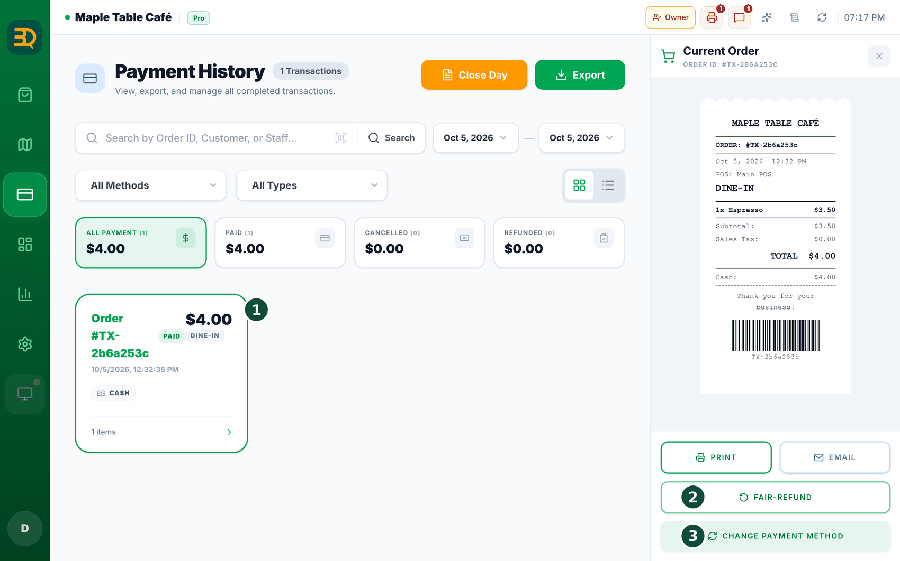
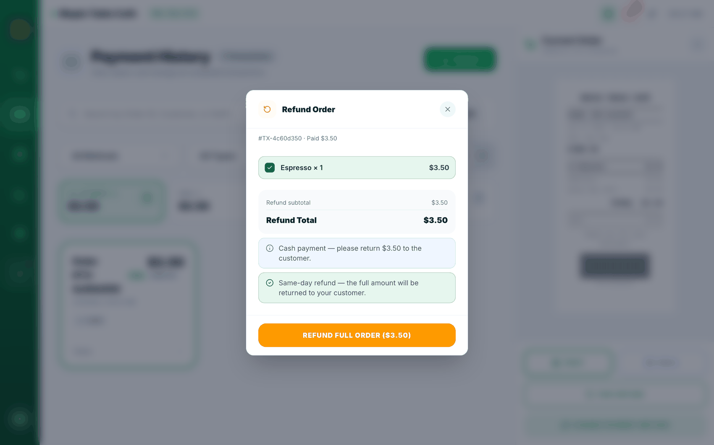
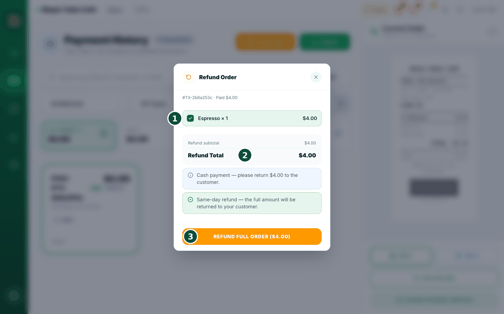

10환불
환불은 손님에게 돈을 돌려주는 일입니다. BrewDesk는 이를 안전하게 처리합니다 — 매니저가 먼저 승인해야 하므로 잘못 사용될 수 없습니다.


- 왼쪽 사이드바의 Manage(관리) › Payment History(결제 내역)로 이동합니다.
- 환불하려는 주문을 탭해 엽니다.
- 오른쪽 영수증 아래의 FAIR-REFUND 버튼을 탭합니다. (화면에는 대문자로 표시됩니다.)

- 모든 돈을 돌려주려면 전액 환불을 선택합니다(당일에 가능). 일부 상품이나 일부 금액만 돌려주려면 부분 환불을 선택합니다.
- 매니저가 PIN(비밀 코드)을 입력해 승인합니다.

- 환불이 완료됩니다. BrewDesk가 기록하고 그날 합계를 대신 고쳐 줍니다.
PIN이란 무엇인가요? 은행 카드처럼 짧은 비밀 코드입니다. 실수로 환불되는 일을 막아 줍니다.
부분 환불은 이제 "부분" 영수증이 출력됩니다. 환불증에는 돈을 돌려드린 품목만 표시되고, 그 아래 금액 줄(소계·할인·서비스료·세금)도 환불한 몫만 출력됩니다. 예전에는 품목은 일부인데 아래 금액은 원래 주문 전체가 출력되어 세로로 더하면 맞지 않았습니다. 이제는 손님이 그대로 더해 보면 실제로 카드로 돌아간 금액과 정확히 일치합니다.
결제 내역의 주문 상태 표시
Payment History의 주문 카드와 주문 상세에 나오는 상태가 이제 모두 우리말(선택한 언어)로 표시됩니다. 예전에는 일부 상태가 내부 이름 그대로 보였습니다. 보류(Held — 영문 화면에서는 "On Hold")는 잠시 세워 둔 주문, 진행 중(Open)은 아직 결제가 끝나지 않은 주문, 합쳐짐(Merged)은 다른 테이블 주문과 하나로 합쳐진 주문입니다.
환불 확인 이메일 (손님이 받는 메일)
환불이 끝나면 BrewDesk가 손님에게 환불 확인 이메일을 자동으로 보냅니다. 주문에 이메일이 등록된 고객이 연결되어 있을 때만 발송되며, 이메일이 없는 손님에게는 보내지 않습니다.
켜고 끄는 곳
Settings › Notifications의 환불 구역 환불 확인(Refund Confirmation — "전액 또는 부분 환불 시 발송됩니다")의 이메일 칸입니다. 기본은 켜짐입니다.
- 제목은 "환불 완료 — 매장 이름", 부분 환불이면 "부분 환불 완료 — 매장 이름"입니다.
- 본문 위쪽에 환불 완료(부분이면 부분 환불 완료) 띠와 "환불이 처리되었습니다" 제목, 그리고 "○○ 주문의 환불이 처리되었습니다." 안내가 나옵니다.
- 아래에 주문(주문 번호) · 주문 날짜 · 환불 유형(전액 환불 / 부분 환불) · 품목(부분 환불일 때 돌려드린 품목) · 원래 합계 · 환불 금액 · 사유 줄이 표시됩니다. 원래 합계는 해당될 때만 나옵니다.
- 환불에서 팁이 빠진 경우 환불 안 된 팁 줄과 "팁 ○○은(는) 응대한 직원에게 지급되어 이번 환불에 포함되지 않습니다." 안내가 함께 나옵니다.
- 마지막에 "결제사에 따라 환불 금액이 계좌에 표시되기까지 영업일 기준 5~10일이 걸릴 수 있습니다." 안내가 있습니다.
메일은 매장 언어와 매장 날짜 형식으로 나갑니다. 제목·본문 문구는
Settings › Store Info에서 정한 매장 언어로, 주문 날짜는 매장 시간대와 매장 국가의 날짜 형식으로 표시됩니다. 손님이 받는 메일에는 BrewDesk의 고객 지원·메일 설정 링크와 홍보 문구가 붙지 않고, 보낸 매장 이름만 표시됩니다. 영수증 이메일도 같은 방식으로 매장 언어로 나가며, 소계·할인 줄이 세로로 더해 맞도록 정리되었습니다.